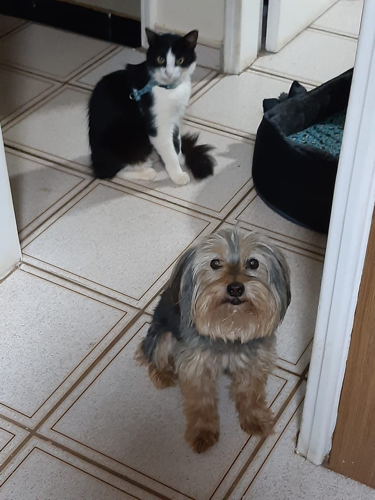
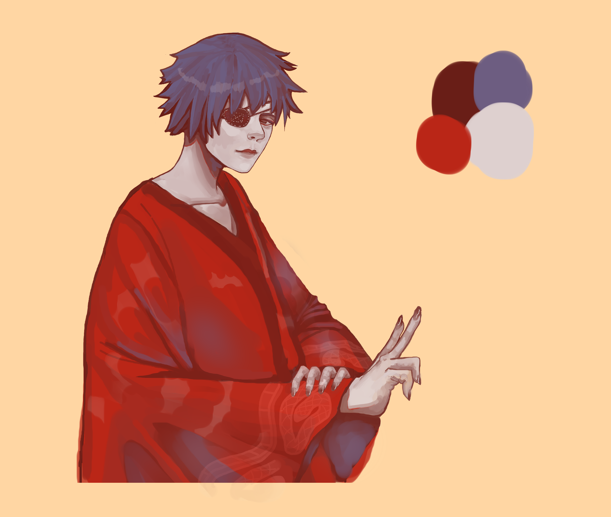
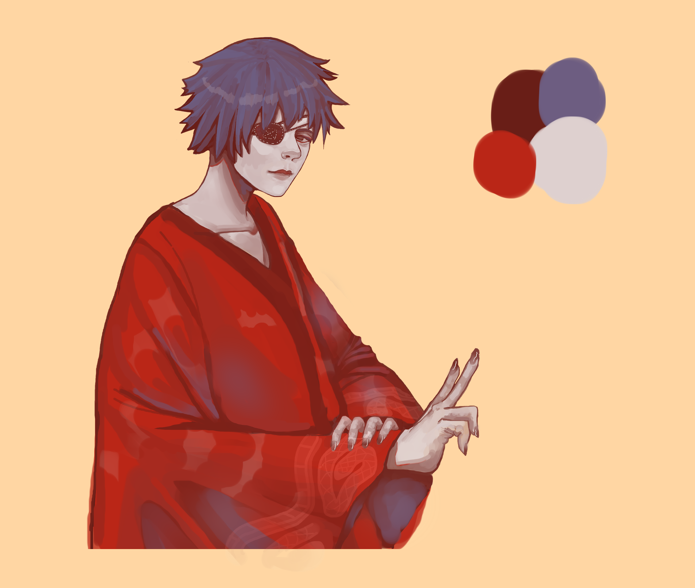
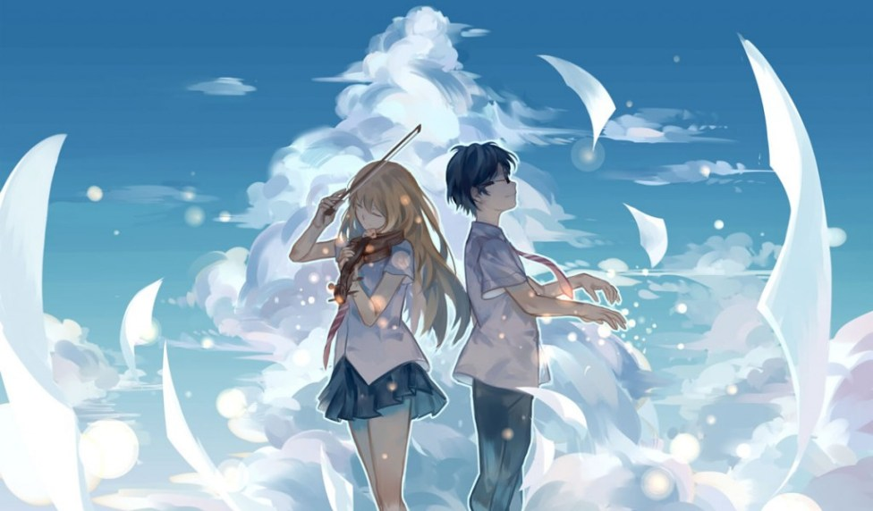
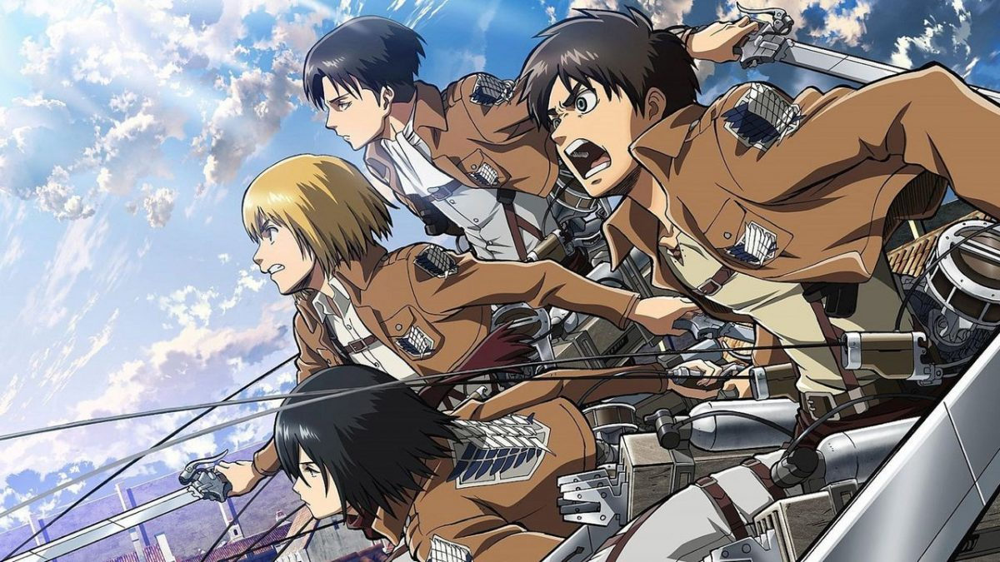
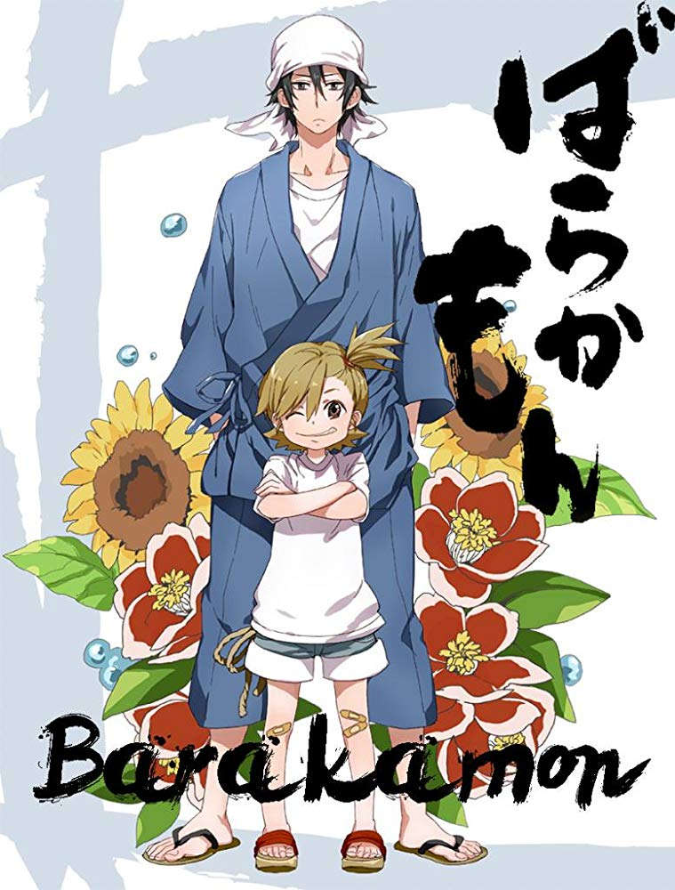

Sobre mim...
Eu tenho uma gatinha (mel) e um cachorrin (toni)
Eu gosto de fazer arte digital
- Ta aí alguns exemplos de desenhos meus:
 

Eu comecei a gostar de desenhar com 10 anos e dei início na arte digital aos 12 anos.
Eu gosto de alguns joguinhos, pricipalmente de detetive e de ritmo (que combinação bizarra, né?)
- Danganronpa
É um jogo sobre 15 alunos que ficam presos em um colégio e precisam descobrir como sair dalí e também quem são os culpados que vão, de rodada em rodada, eliminando alunos. Parece até Big Brother Brasil.
- Osu!

É um jogo em que você terá de clicar em umas bolinhas no tempo exato em que o círculo de aproximação atinge as bordas delas. Eu não sou muito boa de explicar, então fique com essa "gameplay":
Eu gosto de animes também e, dentre os meus favoritos, há:
- Shigatsu wa kimi no uso 
- Shingeki no Kyojin (vulgo Atack on Titan) 
- Barakamon 
Conta a história de um garoto o qual toca piano muito bem, e que parou por conta de pressão familiar, mas ainda tenta voltar a tocar.
Fala de uma civilização que vive dentro de muralhas pela presença de seres humanoides gigantescos(titãs) que se alimentam de pessoas.
Começa com um homem calígrafo que, após um incidente, foi mandado a uma cidade rural para ver o mundo de outra forma.